에너지관리기사 (2011-06-12 기출문제)
1과목: 연소공학
1. 고온부식을 방지하기 위한 대책이 아닌 것은?
- 연료에 첨가제를 사용하여 바나듐의 융점을 낮춘다.
- 연료를 전처리하여 바나듐, 나트륨, 황분을 제거한다.
- 배기가스온도를 550℃ 이하로 유지한다.
- 전열면을 내식재료로 피복한다.
(정답률: 74%)

2. 옥탄(C8H18) 1몰을 공기과잉율 2로 연소시킬 때 연소가스 중 산소의 몰분율은?
- 0.065
- 0.073
- 0.086
- 0.101
(정답률: 50%)
3. 기체연료가 다른 연료에 비하여 연소용 공기가 적게 소요되는 가장 큰 이유는?
- 인화가 용이하므로
- 착화가온도가 낮으므로
- 열전도도가 크므로
- 확산연소가 되므로
(정답률: 86%)
4. 중유를 A급, B급, C급으로 구분하는 기준은 무엇인가?
- 발열량
- 인화점
- 착화점
- 점도
(정답률: 87%)
5. 목재를 가열할 때 가열온도 160~360℃에서 가장 많이 발생되는 기체는?
- 일산화탄소
- 수소가스
- 이산화탄소
- 유화수소가스
(정답률: 78%)
6. 연소가스에 들어 있는 성분을 CO2, C8H18, O2, CO의 순서로 흡수 분리시킨 후 체적 변화로 조성을 구하고, 이어 잔류가스에 공기나 산소를 혼합, 연소시켜 성분을 분석하는 기체연료 분석 방법은?
- 치환법
- 헴펠법
- 리비히법
- 에슈카법
(정답률: 82%)
7. 다음 기체 연료의 발열량(kcal/m3) 순서로 옳은 것은?
- 수성가스 ＞ 석탁가스 ＞ 발생로가스 ＞ 고로가스
- 수성가스 ＞ 선탁가스 ＞ 고로가스 ＞ 발생로가스
- 석탄가스 ＞ 수성가스 ＞ 발생로가스 ＞ 고로가스
- 석탄가스 ＞ 수성가스 ＞ 고로가스 ＞ 발생로가스
(정답률: 68%)
8. 액화석유가스를 저장하는 가스설비의 내압성능에 대한 설명으로 옳은 것은?
- 최대압력의 1.2배 이상의 압력으로 내압시험을 실시하여 이상이 없어야 한다.
- 최대압력의 1.5배 이상의 압력으로 내압시험을 실시하여 이상이 없어야 한다.
- 상용압력의 1.2배 이상의 압력으로 내압시험을 실시하여 이상이 없어야 한다.
- 상용압력의 1.5배 이상의 압력으로 내압시험을 실시하여 이상이 없어야 한다.
(정답률: 77%)
9. 다음 연소에 대한 설명 중 가장 적합한 것은?
- 연소는 응고상태 또는 기체상태의 연료가 관계된 자발적인 발열반응 과정이다.
- 폭발은 연소과정이 개방상태에서 진행됨으로써 압력이 상승하는 현상이다.
- 발화점은 물질이 공기 중에서 산소를 공급받아 산화를 일으키는 현상이다.
- 연소점은 가연성 액체가 개방된 용기에서 증기를 계속 발생하며 연소가 지속될 수 있는 최고 온도를 말한다.
(정답률: 46%)
10. C3H8 1Nm3 을 완전연소했을 때의 건연소가스량은 약 몇 m3인가? (단, 공기 중 산소는 21v% 이다.)
- 17.4
- 19.8
- 21.8
- 24.4
(정답률: 58%)
11. 연료의 발열량이 HL, 피열물에 준 열량이 QP 일 때 열효율(E)은 다음 중 어느 식으로 나타낼 수 있는가?
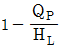
- HL-QP
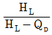
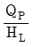
(정답률: 56%)
12. 고체연료의 연료비(fuel ratio)를 옳게 나타낸 것은?
- 휘발분/고정탄소
- 고정탄소/휘발분
- 탄소/수소
- 수소/탄소
(정답률: 79%)
13. 링겔만 농도표는 어떤 목적으로 사용되는가?
- 연돌에서 배출되는 매연농도 측정
- 보일러수의 pH 측정
- 연소가스 중의 탄산가스 농도 측정
- 연소가스 중의 SOx 농도 측정
(정답률: 83%)
14. 부탄가스(C4H10) 2m3 을 완전연소하는데 필요한 이론 공기량은 약 몇 m3인가?
- 32
- 42
- 52
- 62
(정답률: 49%)
15. 다음 연료 중 저위발열량(MJ/kg)이 가장 높은 것은?
- 가솔린
- 등유
- 경유
- 중유
(정답률: 77%)
16. 액체 연료의 미립화 특성 결정시 반드시 고려하여야 할 사항이 아닌 것은?
- 분무압력
- 분무입경
- 입경분포
- 분산도
(정답률: 59%)
17. 연도가스 분석결과 CO2 12.0%, O2 6.0%, CO 0.0% 이라면 CO2max 는 몇 % 인가?
- 13.8
- 14.8
- 15.8
- 16.8
(정답률: 62%)
18. 다음 중 천연가스(LNG)의 주성분은?
- CH4
- C2H6
- C3H8
- C4H10
(정답률: 91%)
19. 통풍방식 중 평형통풍에 대한 설명으로 틀린 것은?
- 안정한 연소를 유지할 수 있다.
- 로내 정압을 임의로 조절할 수 있다.
- 중형 이상의 보일러에는 사용할 수 없다.
- 통풍력이 커서 소음이 심하다.
(정답률: 87%)
20. 메탄의 고발열량을 40MJ/kg라 할 때 메탄의 저발열량은 약 몇 MJ/Nm3 인가?
- 22.1
- 24.5
- 26.3
- 28.6
(정답률: 42%)
2과목: 열역학
21. 동일한 압력하의 과열증기와 포화증기의 온도 차이를 무엇이라 하는가?
- 건조도
- 포화도
- 과열도
- 습도
(정답률: 65%)
22. 다음은 열역학적 사이클에서 일어나는 여러 가지의 과정이다. 이상적인 카르노(Carnot) 사이클에서 일어나는 과정을 옳게 나열한 것은?
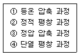
- ①, ②
- ②, ③
- ③, ④
- ①, ④
(정답률: 81%)
23. 증기가 압력 2MPa, 온도 300℃에서 노즐을 통하여 압력 300MPa 으로 단열 팽창할 때 증기의 분출속도는 몇 m/s가 되는가? (단, 입구와 출구 엔탈피 h1=3022kJ/kg, h2=2636kJ/kg이고, 입구속도는 무시한다.)
- 220
- 330
- 672
- 879
(정답률: 39%)
24. 압력이 200kPa 로 일정한 상태로 유지되는 실린더 내의 이상기체가 체적 0.3m3에서 0.4m3로 팽창될때 이상기체가 한 일의 양은 몇 kJ 인가?
- 20
- 40
- 60
- 80
(정답률: 60%)
25. 성능계수가 4 인 증기 압축 냉동 사이클에서 냉동 용량이 4kW 일 때 소요일은 몇 kW 인가?
- 1/16
- 1
- 16
- 64
(정답률: 72%)
26. 초기체적이 V1 상태에 있는 피스톤이 외부로 일을하여 최종적으로 체적이 V1 인 상태로 되었다. 다음 중 외부로 가장 많은 일을 한 과정(process)은? (단, n 은 폴리트로픽 지수이다.)
- 등온과정
- 등압과정
- 단열과정
- 폴리트로픽과정(n ＞ 0)
(정답률: 44%)
27. 이상기체의 상태방정식에 해당하는 것은? (단, 압력 P, 체적 V, 비체적 v, 절대온도 T, 질량 m, 기체상수 R[kJ/kgㆍJK]이다.)
- pv=RT
- PV=RT
- PV=vRT
- Pv=mRT
(정답률: 52%)
28. 열역학 제1법칙은 무엇에 관한 내용인가?
- 열의 전달
- 온도의 정의
- 엔탈피의 정의
- 에너지의 보존
(정답률: 86%)
29. 기체가 단열 팽창을 할 경우 실제의 엔트로피 변화는?
- 증가한다.
- 감소한다.
- 일정하다.
- 감소하다가 일정해진다.
(정답률: 49%)
30. 고열원의 온도가 400℃, 저열원의 온도가 15℃인 두 열원 사이에서 작동하는 카르노 사이클이 있다. 사이클에 가해지는 열량이 120kJ 이면 사이클 일은 몇 kJ 인가?
- 68.6
- 73.1
- 81.5
- 87.3
(정답률: 52%)
31. 대기압이 100kPa 인 도시에서 두 지점의 계기압력 비가 5:2 라면 절대압력비는?
- 1.5 : 1
- 1.75 : 1
- 2 : 1
- 주어진 정보로는 알 수 없다.
(정답률: 79%)
32. 압축비가 5 인 Otto cycle 기관이 있다. 이 기관이 15 ~ 1700℃의 온도범위에서 작동할 때 최고압력은 약 몇 kPa인가? (단, 최저압력은 100kPa, 비열비는 1.4 이다.)
- 3428
- 2650
- 1961
- 1247
(정답률: 18%)
33. 전열기를 사용하여 물 5L의 온도를 15℃에서 80℃까지 올리려고 한다. 전열기의 용량은 0.7kW이고 투입된 에너지가 모두 물에 전달된다고 하면 가열에 요구되는 시간은 약 몇 분인가? (단, 가열 중에 외부로의 열손실은 없다고 가정하며, 물의 비열은 4.179kJ/kgㆍK 이다.)
- 17.26
- 21.74
- 27.52
- 32.42
(정답률: 29%)
34. 이상기체의 경우 Cp-Cv=R 이다. 다음 중 옳은 것은? (단, Cp는 정압비열, Cv정적비열, R은 기체상수이고, k는 비열이다.)
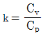
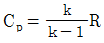
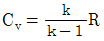
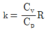
(정답률: 61%)
35. 디젤 사이클에서 압축비가 20, 단절비(cut-off ratio)가 1.7일 때 열효율은 약 몇 % 인가? (단, 비열비는 1.4 이다.)
- 43
- 66
- 72
- 84
(정답률: 63%)
36. 80℃의 물(h=335kJ/kg)과 100℃의 건포화수증기(h=2676kJ/kg)를 질량비 1:1, 열손실 없는 정상유동과정으로 혼합하여 95℃의 포화액-증기 혼합물 상태로 내보낸다. 95℃ 포화상태에서 hf=398kJ/kg, hg=2668kJ/kg 이라면 혼합실 출구 건도는 얼마인가?
- 0.46 미만
- 0.46 이상 0.48 미만
- 0.48 이상 0.5 미만
- 0.5 이상
(정답률: 46%)
37. Gibbs 자유에너지의 정의와 직접 관련이 없는 것은?
- 엔탈피
- 온도
- 엔트로피
- 열전달계수
(정답률: 64%)
38. 이상기체로 구성된 밀폐계의 과정을 표시한 것으로 틀린 것은? (단, Q는 열량, H는 엔탈피, W는 일, U는 내부 에너지이다.)
- 등온과정에서 Q=W
- 단열과정에서 Q=-W
- 정압과정에서 Q=ΔH
- 정적과정에서 Q=ΔU
(정답률: 70%)
39. 노즐(nozzle)에 관한 설명으로 옳은 것은?
- 단면적의 변화로 유량을 증가시키는 장치이다.
- 단면적의 변화로 위치에너지를 증가시키는 장치이다.
- 단면적의 변화로 엔탈피를 증가시키는 장치이다.
- 단면적의 변화로 운동에너지를 증가시키는 장치이다.
(정답률: 61%)
40. 수증기의 증발잠열과 관련하여 옳은 것은?
- 포화압력이 감소하면 증가한다.
- 포화온도가 감소하면 감소한다.
- 건포화증기와 포화액의 내부에너지 차이다.
- 540kcal/kg(2257kJ/kg)으로 항상 일정하다.
(정답률: 70%)
3과목: 계측방법
41. 피토관으로 측정한 동압10mmH2O일 때 유속이 15m/s이었다면 동압이 20mmH2O일 때의 유속은 약 몇 m/s인가?
- 18
- 21.2
- 30
- 40.2
(정답률: 55%)
42. 비례동작에 대하여 가장 바르게 설명한 것은?
- 조작부를 측정값의 크기에 비례하여 움직이게 하는 것
- 조작부를 편차의 크기에 비례하여 움직이게 하는 것
- 조작부를 목표값의 크기에 비례하여 움직이게 하는 것
- 조작부를 외란의 크기에 비례하여 움직이게 하는 것
(정답률: 62%)
43. 고온 물체가 방사되는 에너지 중 특정 파장의 방사에너지, 즉 휘도를 표준 온도의 고온 물체와 필라멘트의 휘도를 비교하여 온도를 측정하는 것은?
- 방사고온계
- 광고온계
- 색온도계
- 서미스터온도계
(정답률: 72%)
44. 실온 22℃, 습도 45%, 기압 765mmHg 인 공기의 증기분압(Pw)은 약 몇 mmHg 인가? (단, 공기의 가스상수는 29.27kg∙m/kg∙kK, 22℃에서 포화압력(Ps)은 18.66mmHg 이다.)
- 4.1
- 8.4
- 14.3
- 20.7
(정답률: 53%)
45. 200℃는 화씨온도로 몇 ℉ 인가?
- 79
- 93
- 392
- 473
(정답률: 69%)
46. 화학적 가스분석계인 연소식 O2계의 특징이 아닌 것은?
- 원리가 간단하다.
- 취급이 용이하다.
- 가스의 유량 변동에도 오차가 없다.
- O2 측정시 팔라듐(Palladium)계가 이용된다.
(정답률: 68%)
47. 다이어프램 압력계에 대한 설명으로 틀린 것은?
- 공업용의 측정범위는 10~300mmH2O 이다.
- 연소 로의 드레프트(draft)계로서 사용된다.
- 다이어프램으로는 고무, 양온, 인청동 등의 박판이 사용된다.
- 감도가 좋도 정도(精度)는 1~2% 정도로 정확성이 높다.
(정답률: 63%)
48. 밀폐된 관에 수은 등과 같은 액체나 기체를 봉입한것으로서 온도에 따라 체적변화를 일으켜 관내에 생기는 압력의 변화를 이용하여 온도를 측정하는 방식이 아닌 것은?
- 차압식
- 기포식
- 부자식
- 액저압식
(정답률: 58%)
49. 다음 중 측정범위가 가장 넓은 압력계는?
- 플로트 압력계
- U자 관형 압력계
- 단관형 압력계
- 침종 압력계
(정답률: 72%)
50. 가스크로마토그래피의 특징에 대한 설명으로 옳지 않은 것은?
- 1대의 장치로는 여러 가지 가스를 분석할 수 없다.
- 미량성분의 분석이 가능하다.
- 분리성능이 좋고 선택성이 우수하다.
- 응답속도가 다소 느리고 동일한 가스의 연속측정이 불가능하다.
(정답률: 72%)
51. 1차 제어 장치가 제어량을 측정하여 제어명령을 발하고, 2차 제어 장치가 이 명령을 바탕으로 제어량을 조절하는 자동 제어는?
- 캐스케이드제어
- 프로그램제어
- 정치제어
- 비율제어
(정답률: 87%)
52. 고체 팽창식 온도계는 2개의 선팽창계수가 다른 물질을 넣어준다. 다음 중 선팽창계수가 큰 재질로 주로 사용되는 것은?
- 인바(invar)
- 황동
- 석영봉
- 산화철
(정답률: 66%)
53. 다음 중 속도 수도 측정식 유량계는?
- Delta 유량계
- Annulbar 유량계
- Oval 유량계
- Thermal 유량계
(정답률: 79%)
54. 액주형 압력계 중 경사관식 압력계의 특징에 대한 설명으로 옳은 것은?
- 일반적으로 정도가 낮다.
- 눈금을 확대하여 읽을 수 있는 구조이다.
- 통풍계로는 사용할 수 없다.
- 미세압 측정이 불가능하다.
(정답률: 77%)
55. 제어계의 난이도가 큰 경우 가장 적합한 제어동작은?
- 헌팅동작
- PID동작
- PD동작
- ID동작
(정답률: 85%)
56. 오리피스에 의한 유량측정에서 유량과 압력과의 관계는?
- 압력차에 비례한다.
- 압력차에 반비례한다.
- 압력차의 평방근에 비례한다.
- 압력차의 평방근에 반비례한다.
(정답률: 63%)
57. 데드타임(dead time) L 과 시정수 T 와의 비 L/T는 제어난이도와 어떤 관계가 있는가?
- 무관하게 일정하다.
- 클수록 제어가 용이하다.
- 조작 정도에 따라 다르다.
- 작을수록 제어가 용이하다.
(정답률: 69%)
58. 열전대 온도계 사용 시 주의사항으로 틀린 것은?
- 계기의 부착은 수평 또는 수직으로 바르게 달고 먼지와 부식성 가스가 없는 장소에 부착한다.
- 기계적 진동이나 충격은 피한다.
- 사용 온도에 따라 적당한 보호관을 선정하고 바르게 부착한다.
- 열전대를 배선할 때에는 접속에 의한 절연 불량은 고려하지 않아도 된다.
(정답률: 89%)
59. 구조와 원리가 간단하여 고압 밀폐탱크의 액면제어용으로 주로 사용되는 액면계는?
- 편위식 액면계
- 차압식 액면계
- 부자식 액면계
- 기포식 액면계
(정답률: 66%)
60. 침종식 압력계에 대한 설명으로 틀린 것은?
- 봉입액은 자주 세정 혹은 교환하여 청정하도록 유지한다.
- 측정범위는 복중식이 단중식보다 넓다.
- 계기 설치는 똑바로 수평으로 하여야 한다.
- 액체측정에는 부적당하고, 기체의 압력측정에는 적당하다.
(정답률: 55%)
4과목: 열설비재료 및 관계법규
61. 진주암, 흑석 등을 소성, 팽창시켜 다공질로 하여 접착제와 3~15%의 석면 등과 같은 무기질 섬유를 배합하여 성형한 고온용 무기질 보온재는?
- 규산칼슘 보온재
- 세라믹화이버
- 유리섬유 보온재
- 필라이트
(정답률: 77%)
62. 다음 중 강관의 이음으로 가장 적절하지 않은 것은?
- 나사이음
- 용접이음
- 플랜지이음
- 소켓이음
(정답률: 71%)
63. 다음 중 개조검사를 받아야 하는 경우가 아닌 것은?
- 증기보일러를 온수보일러로 개조하는 경우
- 보일러의 섹션 증감에 의해 용량을 변경하는 경우
- 보일러의 수관과 연관을 교체하는 경우
- 연료 또는 연소방법을 변경하는 경우
(정답률: 62%)
64. 다음 중 1년 이하 징역 또는 1천만원 이하의 벌금에 해당하는 것은?
- 검사대상기기의 검사를 받지 아니한 자
- 검사를 거부ㆍ방해 또는 기피한 자
- 검사대상기기조종자를 선임하지 아니한 자
- 효율관리기자재에 대한 에너지사용량의 측정결과를 신고하지 아니한 자
(정답률: 61%)
65. 탄화 규소질 내화물의 특징에 대한 설명으로 옳은 것은?
- 마그네사이트를 주원료로 하는 천연광물이다.
- 고온의 중성 및 환원염 분위기에서는 안정하지만 산화염 분위기에서는 산화되기 쉽다.
- 화학적으로 산성이고 열전도율이 작다.
- 내식성은 우수하나 내스폴링성, 내열성이 약하다.
(정답률: 51%)
66. 캐스터블(castable) 내화물의 특징이 아닌 것은?
- 소성할 필요가 없다.
- 접합부 없이 노체를 구축할 수 있다.
- 사용 현장에서 필요한 형상으로 성형할 수 있다.
- 온도의 변동에 따라 스폴링(spalling)을 일으키기 쉽다.
(정답률: 78%)
67. 다음 중 에너지원별 에너지열량환산기준으로 틀린 것은? (단, 총발열량기준이다.)
- 원유 - 10,750kcal/kg
- 천연가스 - 10,550kcal/Nm3
- 실내 등유 - 8,800kcal/L
- 전력 - 860kcal/kWh
(정답률: 68%)
68. 에너지 이용합리화법의 목적이 아닌 것은?
- 에너지의 합리적인 이용 증진
- 국민경제의 건전한 발전에 이바지
- 지구온난화의 최소화에 이바지
- 에너지자원의 보전 및 관리와 에너지수급 안정
(정답률: 67%)
69. 공업용 로에 단열시공을 하였을 때 얻을 수 있는 효과가 아닌 것은?
- 내화재의 내구력을 증가시킬 수 있다.
- 노 내의 온도를 균일하게 유지할 수 있다.
- 열손실을 방지하여 연료사용량을 줄일 수 있다.
- 축열용량을 증가시킬 수 있다.
(정답률: 67%)
70. 다음 중 열사용기자재로 분류되지 않는 것은?
- 연속식 유리 용융가마
- 셔틀가마
- 태양열집열기
- 철도차량용보일러
(정답률: 66%)
71. 요의 구조 및 형상에 의한 분류가 아닌 것은?
- 터널요
- 셔틀요
- 횡요
- 송염식요
(정답률: 74%)
72. 단열재의 기본적인 필요 요건으로 옳은 것은?
- 유효 열전도율이 커야 한다.
- 유효 열전도율이 작아야 한다.
- 소성이나 유효 열전도율과는 무관하다.
- 소성(燒成)에 의하여 생긴 큰 기포(氣泡)를 가진 것이어야 한다.
(정답률: 72%)
73. 공공사업주관자는 에너지사용계획의 조정 등 조치 요청을 받은 경우에 지식경제부령으로 정하는 바에 따라 이행계획을 작성하여 제출하여야 한다. 이행 계획에 반드시 포함되어야 하는 항목이 아닌 것은?
- 이행 주체
- 이행 방법
- 이행 예산
- 이행 시기
(정답률: 77%)
74. 터널가마(tunnel klin)의 장점이 아닌 것은?
- 소성이 균일하여 제품의 품질이 좋다.
- 온도조절과 자동화가 용이하다.
- 열효율이 좋아 연료비가 절감된다.
- 사용연료의 제한을 받지 않고 전력소비가 적다.
(정답률: 80%)
75. 에너지 저장의무 부과대상자가 아닌 것은?
- 연간 1만 석유환산톤 이상의 에너지를 사용하는 자
- 석탄산업버에 의한 석탄 가공업자
- 집단에너지사업법에 의한 집단에너지 사업자
- 도시가스사업법에 의한 도시가스 사업자
(정답률: 67%)
76. 마그네시아 또는 돌로마이트를 원료로 하는 내화물이 수증기의 작용을 받아 Ca(OH)2나 Mg(OH)2를 생성하는데 이 때 큰 비중변화에 의하여 체적변화를 일으키기 때문에 노벽에 균열이 발생하거나 붕괴하는 현상을 무엇이라고 하는가?
- 버스팅(bursting)
- 스폴링(spalling)
- 슬래킹(slaking)
- 에로존(erosion)
(정답률: 70%)
77. 연속가열로에 대한 강제이동 방식이 아닌 것은?
- Pusher type
- Walking beam type
- Roller hearse type
- Batch type
(정답률: 65%)
78. 다음 중 전기로에 해당되지 않는 것은?
- 퓨셔로
- 아크로
- 저항로
- 유도로
(정답률: 75%)
79. 인정감사대상기기 조정자의 교육을 이수한 사람의 조정범위는 증기보일러로서 최고사용압력이 1MPa이하이고 전열면적이 얼마 이하일 때 가능한가?
- 1m2
- 2m2
- 5m2
- 10m2
(정답률: 67%)
80. 보온재의 열전도율에 대한 설명으로 틀린 것은?
- 재료의 두께가 두꺼울수록 열전도율이 작아진다.
- 재료의 밀도가 클수록 열전도율이 작아진다.
- 재료의 온도가 낮을수록 열전도율이 작아진다.
- 재질내 수분이 작을수록 열전도율이 작아진다.
(정답률: 79%)
5과목: 열설비설계
81. 소용량 주철제 보일러란 주첼제 보일러 중 전열면적이 몇 m2이하이고 최고사용 압력이 몇 MPa 이하인 것을 말하는가?
- 3m2, 0.1MPa
- 5m2, 0.1MPa
- 3m2, 0.2MPa
- 5m2, 0.2MPa
(정답률: 69%)
82. 다음 [보기]의 특징을 가지는 증기트랩의 종류는?
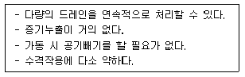
- 플로트식 트랩
- 버켓형 트랩
- 바이메탈식 트랩
- 디스크식 트랩
(정답률: 65%)
83. 안쪽 반지름이 5cm, 바깥쪽 반지름이 15cm인 원통의 열전도도는 0.1kcal/m∙h∙℃이다. 외기온도 0℃, 내면 온도 100℃일 경우 이 원통의 1m 당 열손실은 몇 kcal/h 인가?
- 55.3
- 56.2
- 57.2
- 58.4
(정답률: 33%)
84. 육용강제 보일러에서 봉 스테이 또는 경사 스테이를 핀이음으로 부착할 경우, 스테이 링부의 단면적은 스테이 소요 단면적의 얼마 이상으로 하여야 하는가?
- 1배
- 1.25배
- 1.75배
- 2배
(정답률: 79%)
85. 노통 보일러에 두께 13mm 이하의 경판을 부착하였을 때 가셋 스테이의 하단과 노통 상단과의 완충폭(브레이징 스페이스)은 몇 mm 이상으로 하여야 하는가?
- 230
- 260
- 280
- 300
(정답률: 66%)
86. 압력용기에 대한 수압시험 압력의 기준으로 옳은 것은?
- 최고 사용압력이 0.1MPa 이상의 주철제 압력용기는 최고 사용압력의 3배이다.
- 비철금속제 압력용기는 최고 사용압력의 1.5배의 압력에 온도를 보정한 압력이다.
- 최고 사용압력이 1MPa 이하의 주철제 압력용기는 0.1MPa 이다.
- 법랑 또는 유리 라이닝한 압력용기는 최고 사용압력의 1.5배의 압력이다.
(정답률: 63%)
87. 보일러의 안전사고의 종류로서 가장 거리가 먼 것은?
- 노통, 수관, 연관 등의 파열 및 균열
- 보일러내의 스케일 부착
- 동체, 노통, 화실의 압궤(collapse) 및 수관, 연관등 전열면의 팽출(bulge)
- 연도나 노내의 가스폭발, 역화 그 외의 이상연소
(정답률: 88%)
88. 보일러 동체, 드럼 및 일반적인 원통형 고압용기의 강도 계산식(두께 계산식)은? (단, t는 원통판 두께, P는 내부 압력, D는 원통안지름, σ는 인장응력(원통 단면의 원형접선방향)이다.)
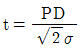
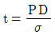
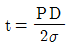
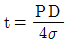
(정답률: 75%)
89. 삽입형으로 보일러의 고온전열면 또는 과열기 등에 사용되고 증기 및 공기를 동시에 분사시켜 취출작업을 하는 슈트 블로어의 종류는?
- 로터리형
- 에어 히터 크리너형
- 쇼트 리트랙터블형
- 롱 리트랙터볼형
(정답률: 58%)
90. 수관보일러가 원통보일러에 비해 가지는 장점이 아닌 것은?
- 구조가 간단하고 청소가 용이하다.
- 고압증기의 발생에 적합하다.
- 증발률이 크고 열효율이 높아 대용량에 적합하다.
- 시동시간이 짧고 과열위험성이 적다.
(정답률: 76%)
91. 보일러 성능표시 방법의 하나인 레이팅(Rating)에 대한 설명으로 옳은 것은?
- 급수온도가 100℉이고 압력 70psig의 증기를 매시간 30lb 발생하는 능력을 말한다.
- 급수온도가 10℃이고 압력 4.9kg/cm2g의 증기를 매시간 13.6kg 발생하는 능력을 말한다.
- 1ft2 당의 상당증발량 34.5lb/h를 기준으로 하여 이것을 100% 레이팅이라 한다.
- 1m2 당의 상당증발량 3.45kg/h를 기준으로 하여 이것을 100% 레이팅이라 한다.
(정답률: 70%)
92. 2중관 열교환기에 있어서의 열관류율(K)의 근사식은? (단, Fi : 내관 내면적, Fo : 내관 외면적, αi : 내관 내면과 유체 사이의 경막계수, αo : 내관 외면과 유체 사이의 경막계수이며, 전열계산은 내관 외면기준일때이다.)
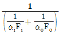
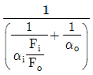
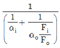
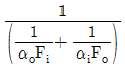
(정답률: 71%)
93. 다음 중 ppm 단위로서 틀린 것은?
- mg/kg
- g/ton
- mg/L
- kg/m3
(정답률: 75%)
94. 어느 병류열교환기에서 ( 그림 )과 같이 고온 유체가 90℃로 들어가 50℃로 나오고 이와 열교환되는 유체가 20℃에서 40℃까지 가열되었다. 열관류율이 50kcal/m2∙h∙℃이고, 시간당 전열량이 8000kcal일 때 이 열교환기의 전열면적은 약 몇 m2인가?
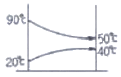
- 5.2
- 6.2
- 7.2
- 8.2
(정답률: 49%)
95. 유속을 일정하게 하고 관의 직경을 2배로 증가시켰을 경우 일반적으로 유량은 어떻게 변하는가?
- 2배로 증가
- 4배로 증가
- 8배로 증가
- 16배로 증가
(정답률: 86%)
96. 다음 중 보일러 플랜트(Boiler Plant)에 발생하는 부식과 가장 거리가 먼 것은?
- 일반 부식
- 점식(Pitting)
- 알칼리 부식
- 응력부식(전단부식)
(정답률: 51%)
97. 매시간 1600kg의 석탄을 연소시켜 12000kg/h의 증기를 발생시키는 보일러의 효율은? (단, 석탄의 저위발열량은 6000kcal/kg, 급수온도는 20℃, 증기의 엔탈피는 700kcal/kg 이다.)
- 75%
- 80%
- 85%
- 90%
(정답률: 54%)
98. 고온부식의 방지대책이 아닌 것은?
- 중유 중의 황성분을 제거한다.
- 연소가스의 온도를 낮게 한다.
- 고온의 전열면에 보호피막을 씌운다.
- 고온의 전열면에 내식재료를 사용한다.
(정답률: 80%)
99. 코프식 자동급수 조정장치는 다음 중 어느 것을 이용하는가?
- 공기의 열팽창
- 금속관의 열팽창
- 액체의 열팽창
- 증기압력의 변화
(정답률: 60%)
100. 열관류율에 대한 설명으로 옳은 것은?
- 인위적인 장치를 설치하여 강제로 열이 이동되는 현상이다.
- 유체의 밀도 차에 의한 열의 이동현상이다.
- 고체의 벽을 통항여 고온 유체에서 저온의 유체로 열이 이동되는 현상이다.
- 어떤 물질을 통하지 않는 열의 직접 이동을 말하며 정지된 공기층에 열 이동이 가장 적다.
(정답률: 76%)